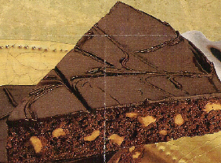

Double Dark Decadent Brownie
Serves 8

Directions
- Grease abd flour 9-inch layer cake pan. In large saucepan bring corn syrup and buter to a boil, stirring occasionally; remove from heat. Add chocolate; stir until melted. Add sugar; stir in eggs, one at a time, then vanilla, flour and nuts. Pour into pan. Bake in 350 degrees oven for 30 minutes or until tester inserted in center comes out clean. Cool in pan 10 minutes. Remove; cool compleltly on rack. Prepare glaze, pour on top and spread on sides. Let stand 1 hour. Serves 8.
- Chocolate Glaze: In small saucepan melt 3 squares (3 oz) Semi Sweet Chocolate with 1 tablespoon butter or margarine over low heat, stirring often. Remove from heat. Stir in 2 tablespoons Karo Corn Syrup and 1 tsp milk.